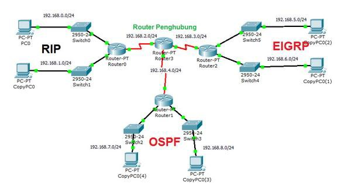
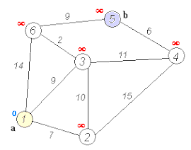

Enhanced Interior Gateway Routing Protocol
Is a Cisco Systems proprietary distance vector routing protocol that offers the best of Distance Vector algorithms. It is considered an advanced protocol that builds on the characteristics normally associated with link-state protocols. Some of the best OSPF features, such as soft updates and neighbor discovery, are used similarly with EIGRP. Although it does not guarantee the use of the best route, it is widely used because EIGRP is somewhat easier to configure than OSPF. EIGRP improves convergence properties and operates more efficiently than IGRP. This allows a network to have an improved architecture and can maintain current investments in IGRP.
Open Shortest Path First(OSPF)
Open the shortest path first in Spanish, it is a network protocol for hierarchical interior gateway routing or Interior Gateway Protocol (IGP), which uses the Dijkstra algorithm, to calculate the shortest route between two nodes.Its metric measure is called cost, and it takes into account various parameters such as bandwidth and link congestion. OSPF also builds an identical Link-State Database (LSDB) on all routers in the area.OSPF can operate safely using MD5 to authenticate its points before taking new routes and before accepting link-state announcements.
Routing traffic
OSPF keeps up-to-date the routing capacity between the nodes of a network by disseminating the network topology and the link-state information of its various nodes. This diffusion is done through several types of packages:
- Hello packets (type 1): each router periodically sends a packet to its neighbors that contains the list of neighbors recognized by the router, indicating the type of relationship it maintains with each one.
- Link-state database description packages or DataBase Description or DBD (type 2): used in the link-state database exchange between two nodes, and allow the other node involved in the synchronization to be informed about the records contained in the LSDB itself, through a summary of these.
- Optimizes routing, notably reducing algorithm complexity.
- Link-state packets or Link State Advertisements (LSA): changes in the state of a router's links are notified to the network by sending LSA messages. Depending on the state of the router and the type of information transmitted in the LSA, several formats are distinguished (in parentheses, the versions of OSPF in which they are used).
Router types in OSPF
A classic OSPF router is capable of routing any packet destined for any point in the area where it is located (intra-area routing). For routing between different areas of the AS (inter-area routing) and from the AS to the outside (external routing), OSPF uses special routers that maintain more complete topological information than the area in which they are located. Thus, they can be distinguished:
- Area border routers or Area Border Routers (ABR), which maintain the topological information of your area and connect it with the rest of the areas, allowing packets to be routed to any point in the network (inter-area routing).
- Border routers of the Autonomous System or Autonomous System Border Routers (ASBR), which allow packets to be routed outside the AS where they are hosted, that is, to other networks connected to the Autonomous System or the rest of the Internet (external routing).
Type of areas
- Backbone area
- Stub area
- Not-so-stubby area
Dijkstra's algorithm
OSPF uses Dijkstra's algorithm to determine the best route to take. Also called SPF
(Shortest Path First) algorithm. It was formulated by Edsger Dijkstra.OSPF triggers
its updates with every change in the network topology, reducing convergence time.
Based on an update, a router creates a topological database that makes it possible
to calculate network accessibility by calculating a tree of the topology of which
the router is the root.
